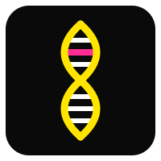
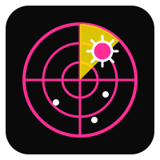
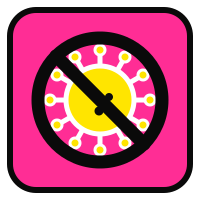
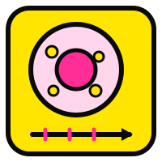
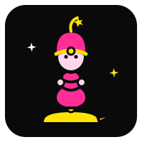
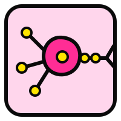

I'm Arjun. I work @ latch bio. I once ate 9 pounds of gummy bears in a week (which made me ~7% gummy bear)! You can reach me by writing a note on the back of a Haribo Wild Berry bag and putting it at a supermarket in the Mission.
I enjoy trying to understand and model biological systems (namely: LLM Biological Intellegence, PLMs/GLM steering, DNA oragimi, DNA kinetics & thermodynamics, and the brain).
I enjoy working on hardware (mostly optimization algorithms in architecture and analog), probability theory (high-dimensional modelling and bayesian stats), and spider webs.
You might also find me freestyle rapping, waffling, pretending to be an intellectual, and running across every street in sf (4% of the way there).





